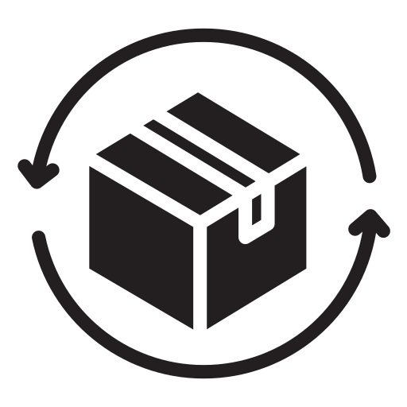

Registre, busque e recupere seus itens de forma rápida e segura!
Registre seu item perdido ou encontrado no sistema.
Forneça detalhes para facilitar a identificação.

Receba alertas quando houver correspondência.

Retire seu item com segurança no setor pedagógico.
Seus dados estão protegidos! Nosso sistema segue a LGPD para garantir sua privacidade.
Política de Privacidade